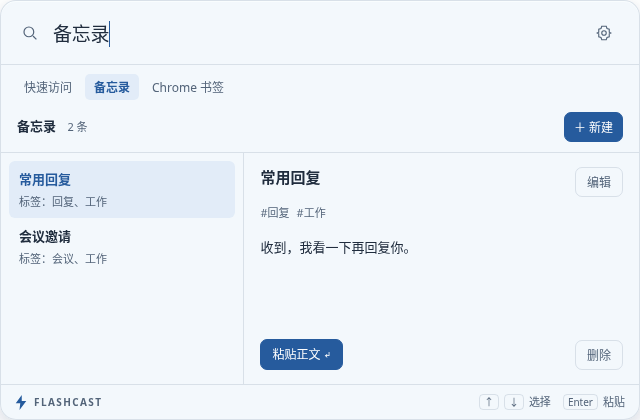

⌕ 搜索软件、插件或备忘录标签…
__FALLBACK__
Flashcast
›
‹
⚙
×
＋ 新建
名称 / 用途
类型

没有匹配结果
换一个关键词，或清空搜索。
编辑
取消
选中内容后在这里预览
支持完整文字与图片。
__INLINE_EDITOR__
↵
＋
新建
✎
编辑
⚙
配置
常用
外观
插件配置
备忘录
Chrome 书签
剪切板
调整插件偏好与直接进入页面的快捷键。
记录剪切板
保留期限（天）
容量（项）
深色外观
打开插件页面
平台
Linux
Windows
macOS
保存
恢复默认
留空可关闭该命令的快捷键。
↵
新建备忘录
⌃ N
编辑备忘录
⌃ E
删除备忘录
插件配置
⌃ ,
__OVERLAY_EDITOR__
__DRAWER_EDITOR__
__FULL_EDITOR__
返回